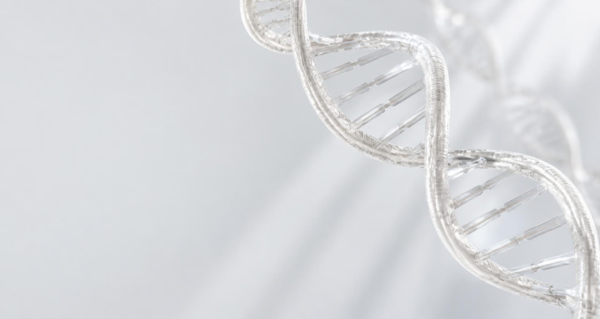

B.Tech
Biotechnology
undergraduate
Learning at the intersection of biology,
technology, and possibility.

Exploring the possibilities of biotechnology.
Building the knowledge to turn scientific curiosity into meaningful, real-world impact.
I’m Sujal, a biotechnology undergraduate at Lovely Professional University. I’m building a strong foundation in the life sciences, with a growing interest in how biotechnology can improve health, food, and everyday life.
My academic journeyLearning at the intersection of biology,
technology, and possibility.
Expected graduation from
Lovely Professional University.
Biotechnology, laboratory science,
pharmaceuticals, and food technology.
Four connected fields. An expanding perspective on what science can do.
Exploring the science of living systems, from molecular biology and genetics to real-world biological applications.
Building an understanding of experimental methods, careful observation, and the fundamentals of good laboratory practice.
Discovering how biological processes can contribute to drug development, therapeutics, and better healthcare.
Learning how science can improve food safety, quality, and sustainable approaches to food production.
Two school chapters that shaped how I learn — now carried forward into a degree in biotechnology.

Lovely Professional University · Punjab, India
My current focus is developing a solid understanding of biotechnology, biological systems, and the scientific principles behind laboratory work.
Interested in biotechnology, shared learning, or future opportunities? I’m looking forward to connecting with curious minds and growing alongside the scientific community.